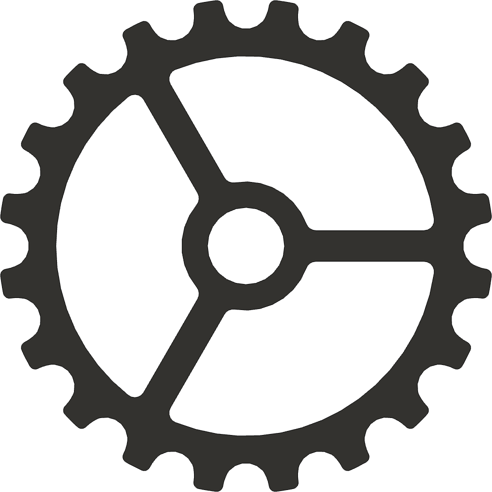

These are the steps for getting your new Rosetta system started up.
- Connect all the hardware together:
- Connect the display, keyboard, and mouse to the system.
- If you have an Expansion Box, plug its network cable and power into the Base Box.
- Connect the power cord to an outlet from the Base Box.
- Power on
WiFi Icon
- the monitor, and
- the Base Box on (this will also power on the Expansion Box).
- Connect to Wifi - click on the Wi-Fi icon located on the title bar at the top of the system. It is the one indicated on the image to the right.

- Update the Rosetta software on your Rosetta system: click on Applications at the top left corner of the screen, then the arrow to the right of Rosetta, then Update Rosetta (the green arrow).
- Connect the stepper motors to the machine. If you need to add connectors to your cables, there is a wiring diagram in this user manual. If you are using limit switches, an E-stop button, or a signal tower, connect those too.

- Use the big gear on the desktop to run the Rosetta Settings program.
- Axis Selection tab
- Tick Expansion Box - Connected if you have one
- Choose which axis each plug is used for.
- Inputs, Outputs, and Sounds tab
- Set up limit switches, E-stop button, signal tower, and sounds.
- Axis and Stepper Motor Tuning tab
- Set the scales needed for the devices you are using.
- We recommend you leave the other settings at the default until you use the system a bit.
- Other tab
- Select the Measurement System you wish to use
- We recommend you leave the other settings at the default until you use the system a bit.
- Axis Selection tab
- Click Save All Settings, then close the program.
- Axis Selection tab

- Start Rosetta (double-click on the Turk's head icon), then press F1 to release the E-stop and F2 to power the machine on.
|
|
Additional Notes
If you run the update program too soon after starting up your system, you may encounter an error. This is because the virus scanning is still running.
Wait 30 minutes and run it again. This should clear up any issues.
System Usage Notes
Changes to System Settings
Settings are changed in the separate Rosetta Settings program, which cannot run while Rosetta is running. To change a setting:
- Close Rosetta by clicking on the X in the top right of the screen, and give it a minute or so to let the shutdown program complete.
- Run the Settings program, make your changes, and click Save All Settings on the Axis Selection tab.
- Close the Settings program, then double-click on the Turk's head icon to restart Rosetta.
Switching the System Off

Do not switch the power off while the computer is running. Switching off a running computer can damage the files on its memory card. Instead:
- Close Rosetta, and any other Rosetta program that is open.
- Click on Shut Down - at the bottom of the Applications menu, or the red power symbol on the bar that pops up at the bottom middle of the screen.
- Click Shut Down to confirm. If a Rosetta program is still open, it asks you to close it first.
- When the screen has gone dark, wait 10 seconds, then switch the power off.
Note: This is not the same as turning the machine off with F2 (or when an error or a limit switch does it). That is LinuxCNC’s own power off: it only stops the axes and spindles, and the computer keeps running.
Entering Data Values
The system used for building screens in LinuxCNC has some quirks.
- To change a value, you must have the mouse over that field.
- To have the system accept the value you entered, you must depress the Enter key after entering the value.
- System checks are built into many fields to help you verify that you are not entering invalid values. For example, there is a relationship between the axis scaling and the axis max speed. Thusly, we have the system ensure you do not enter a set of values which is too high (and which would not work correctly, thusly bringing up an error message).
User Settings Files
Your settings are saved in the file
|
~/ |
The Settings program can also save a copy of all your settings, or just some of them, into another file, and load settings back from a file. See Saving and Sharing Settings.